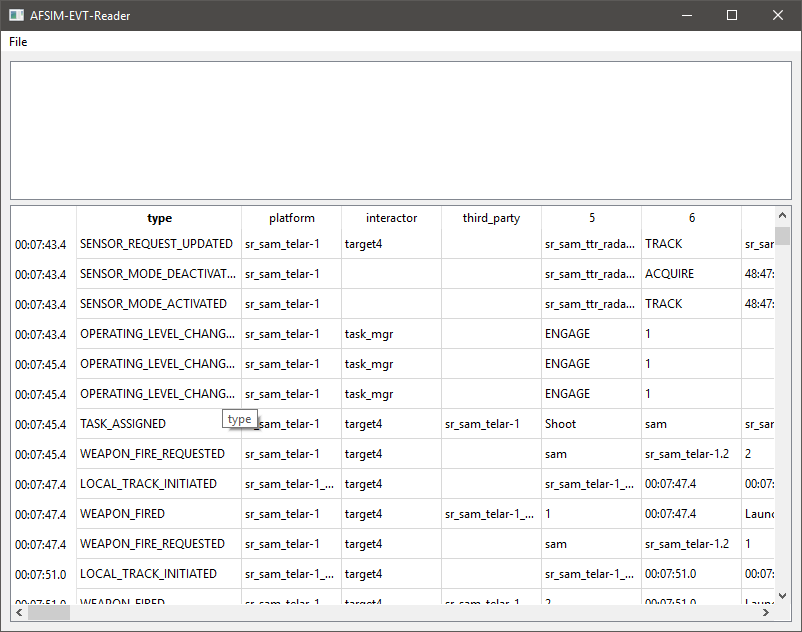

EVT Reader¶
Overview¶
The EVT Reader tool is an application that can read and display AFSIM’s EVT files. EVT files contain time-stamped events in a human readable format. The reader formats the events in a tables and allows filtering and exporting to new files.
Main Display¶
The main display of the application shows a table with the each event on a row, and the data of the event in columns.
The time of an event is displayed in the vertical header. The first four columns are the type of event, the owner or source-platform, the target-platform, and a third-party platform. Not all events populate all of these columns. Columns further to the right are populated with data from the event. The data type can be seen on a tool tip when hovering over the table cell. When many event-types are shown, a single column will represent many different fields of data. A column may represent different fields of data even for a single event type in cases where AFSIM output variable quantities of values.
Filtering and Exporting¶
By right clicking on a cell, a number of filter options are provided.
Show when column X = Y - Applies a filter to only show events that match the current columns value.
Hide when column X = Y - Applies a filter to hide all events that match the current columns value.
Create Filter - Applies a custom filter to the current column.
Export - Exports the filtered data to a new EVT file.
The top portion of the display shows the currently applied filters. Right clicking on these provides options to:
Remove Rule - Removes the filter rule the cursor is over.
Edit Rule - Changes the filter rule hovered over.
Clear Rules - Remove all filter rules.
Save Filter - Writes the filter rules out to file.
Load Filter - Reads a set of filter rules from file.
Command Line¶
The command line usage of the evt_reader is as follows:
evt_reader [input.evt] [--filter filter.evt_filter] [--out output.evt]
If an input file is provided it will be loaded at start-up.
If a filter is provided it will be applied at start-up.
If an output file is provided, the application will apply the filter to the input file and write it out to the output file. In this case, the application will not display. This could be used with a scripting language to rapidly apply an event filter to many data files in sequence.